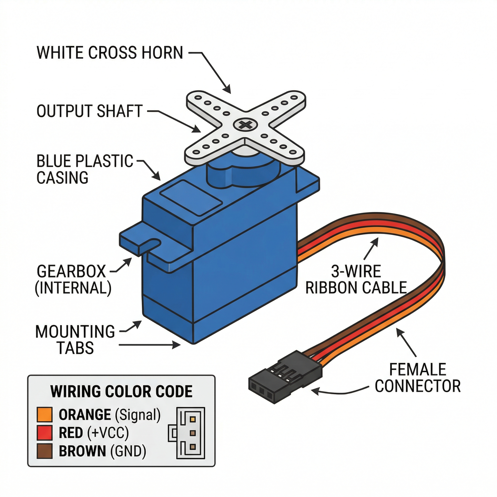

A Servo Motor is a rotary actuator that allows for precise control of angular position. Unlike a standard DC motor which spins continuously, a servo can be instructed to move to a specific angle (usually between 0 and 180 degrees) and hold that position.

A servo motor is a closed-loop system that uses position feedback to control its motion and final position.
| Pin / Wire Color | Function |
|---|---|
| GND (Brown/Black) | Common ground connection. |
| VCC (Red) | Power supply. Typically 4.8V to 6V. |
| PWM / Signal (Orange/White) | Control signal. Connect to a PWM-capable Arduino pin (e.g., Pin 9). |
In the OpenHW Studio emulator, the servo will physically rotate its horn in real-time based on the commands sent from your Arduino sketch. You can observe the angle changes visually as the simulation runs!
Using the built-in Servo.h library makes controlling a servo incredibly simple.
#include <Servo.h>
Servo myservo; // create servo object to control a servo
int pos = 0; // variable to store the servo position
void setup() {
myservo.attach(9); // attaches the servo on pin 9 to the servo object
}
void loop() {
for (pos = 0; pos <= 180; pos += 1) { // goes from 0 degrees to 180 degrees
// in steps of 1 degree
myservo.write(pos); // tell servo to go to position in variable 'pos'
delay(15); // waits 15ms for the servo to reach the position
}
for (pos = 180; pos >= 0; pos -= 1) { // goes from 180 degrees to 0 degrees
myservo.write(pos); // tell servo to go to position in variable 'pos'
delay(15); // waits 15ms for the servo to reach the position
}
}